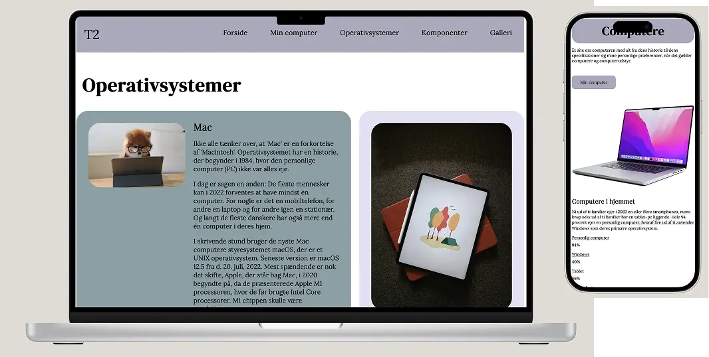

PROJEKT 1
GRUNDLÆGGENDE WEB
I dette tema blev vi introduceret til en række værktøjer og begreber indenfor multimediedesign. Begreber som wireframe, layout-diagrammer, responsiv og gestaltlovene. Vi har fået kendskab til til VS Code samt programmeringssprogene HTML og CSS, og efterfølgende udarbejdet en hjemmeside vha. af de værktøjer vi har lært.
PROCESSEN
Selve indholdet og layoutet på hjemmesiden var givet på forhånd med wireframe og layout-diagrammer, så opgaven gik ud på at aflæse diagrammerne, og få indholdet i HTML’en opdelt i de rigtige div’er og sektioner, samt udarbejde den tilhørende css med grid, margin, padding, fonte og flex, så vi til sidst fik det ønskede resultat.
LØSNING
Her kan du finde den endelige løsning, hvor alle elementer er samlet og implementeret. Klik på linket nedenfor for at se den endelige site.
emilieerikson.dk